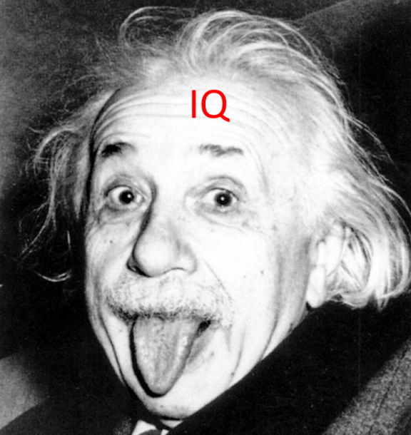
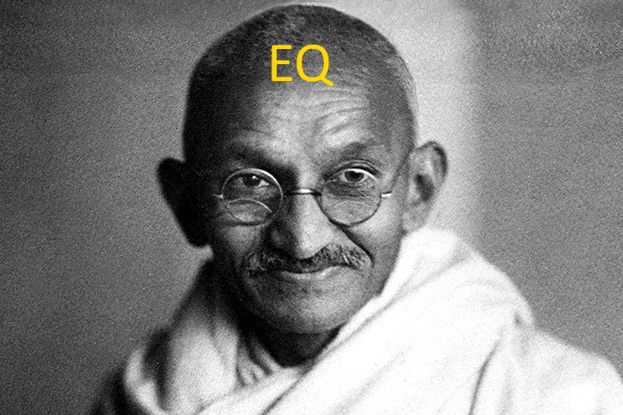

Emotional Intelligence
Emotional Intelligence is a measure of how well you understand your own emotions and habits as well as others. Attributes like self-awareness, empathy, motivation and social skill are all affected by this.
Traditionally IQ (or Intelligence Quotient) was seen as one of the most important factors when considering a person’s success. Recently however, other factors such as EQ (Emotional Quotient) have proven to be just as important.
While IQ is responsible for a person’s logical and analytical ability, EQ handles a person’s emotional ability. An example of a high IQ person would be Albert Einstein, while a high EQ person is someone like Gandhi.
 Whether IQ and EQ can be raised is still under debate, but we can engage in exercises that increase our associated skills. Lacking in the logical department? Try a few logic puzzles regularly to get that part of the brain pumping. Low on motivation? Practice some meditation or journaling.
EQ is an important factor to one’s own success and happiness. A high EQ allows a person to be aware of themselves and their emotions, thus enabling them to form habits and patterns to manage them effectively. This awareness and understanding also extends to others, allowing them to cultivate healthy relationships and work well in a team.